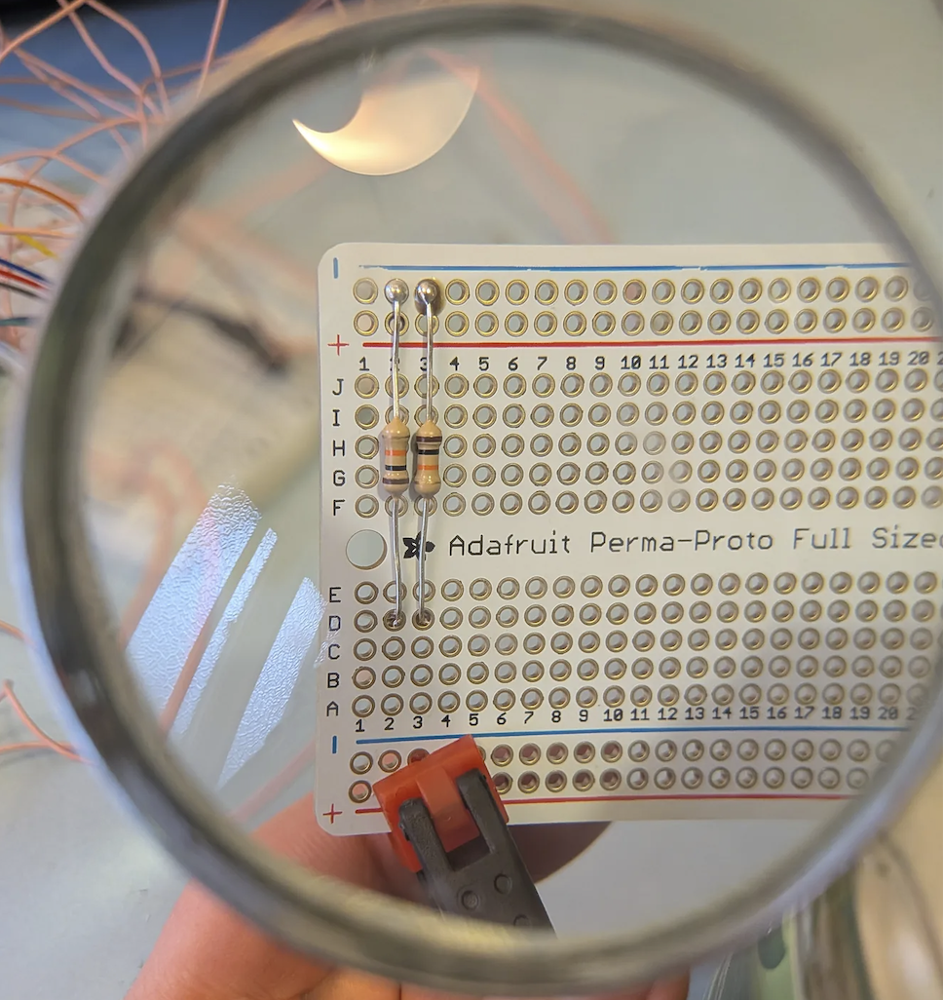
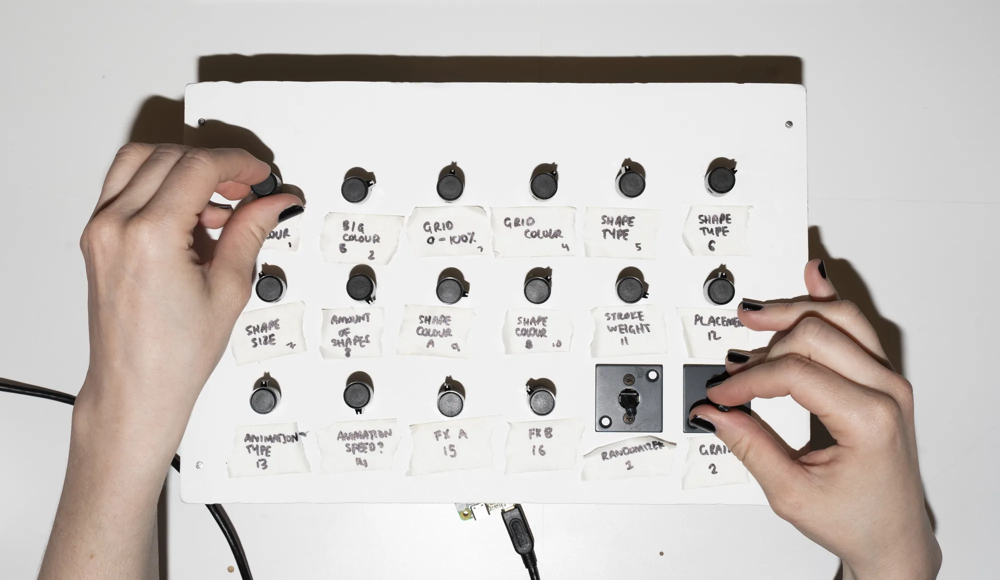
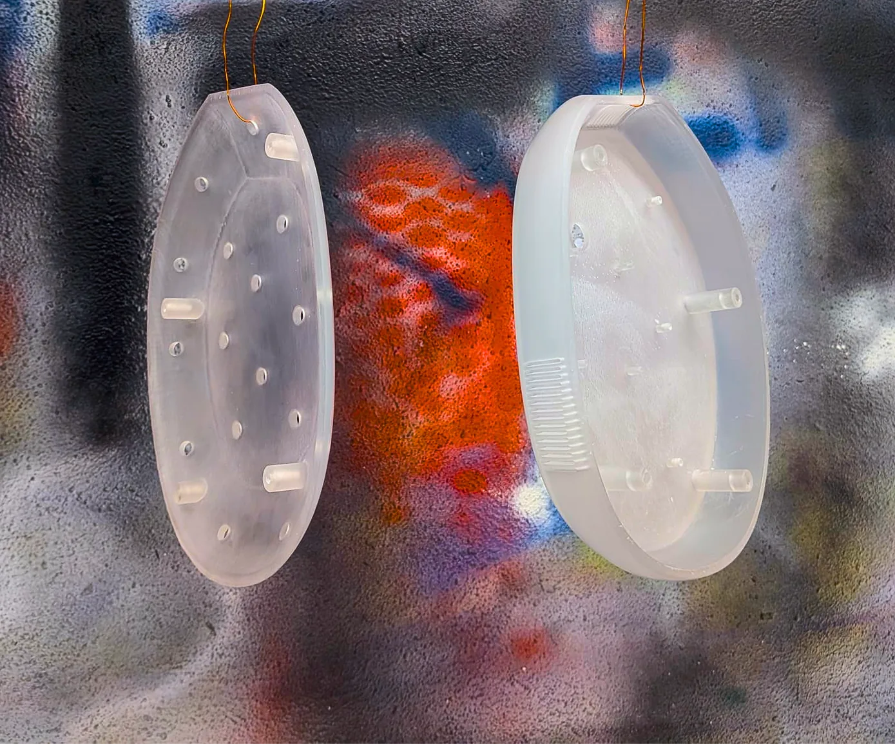
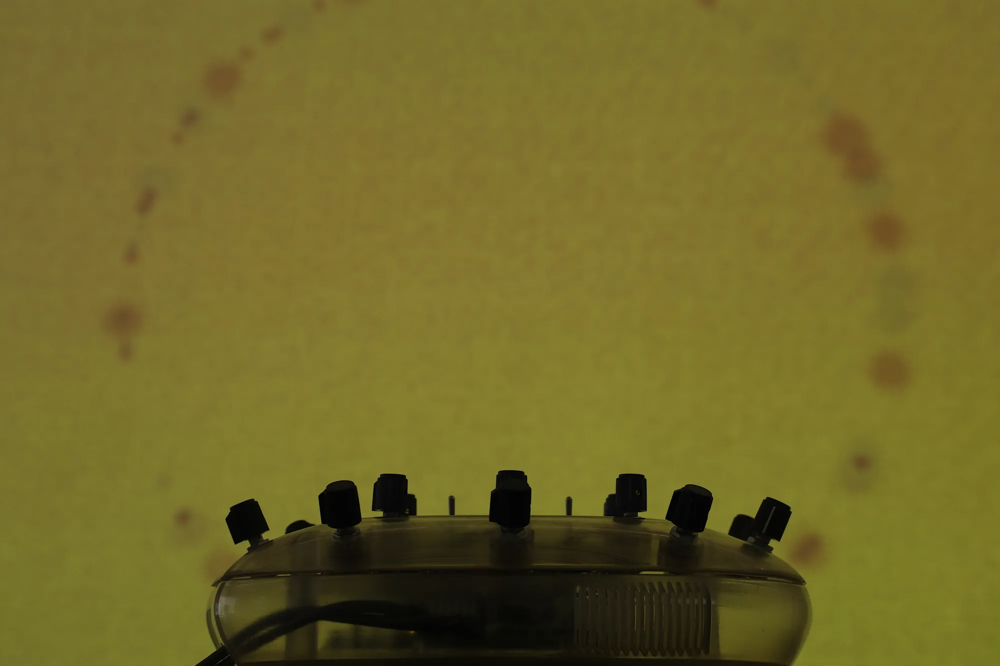
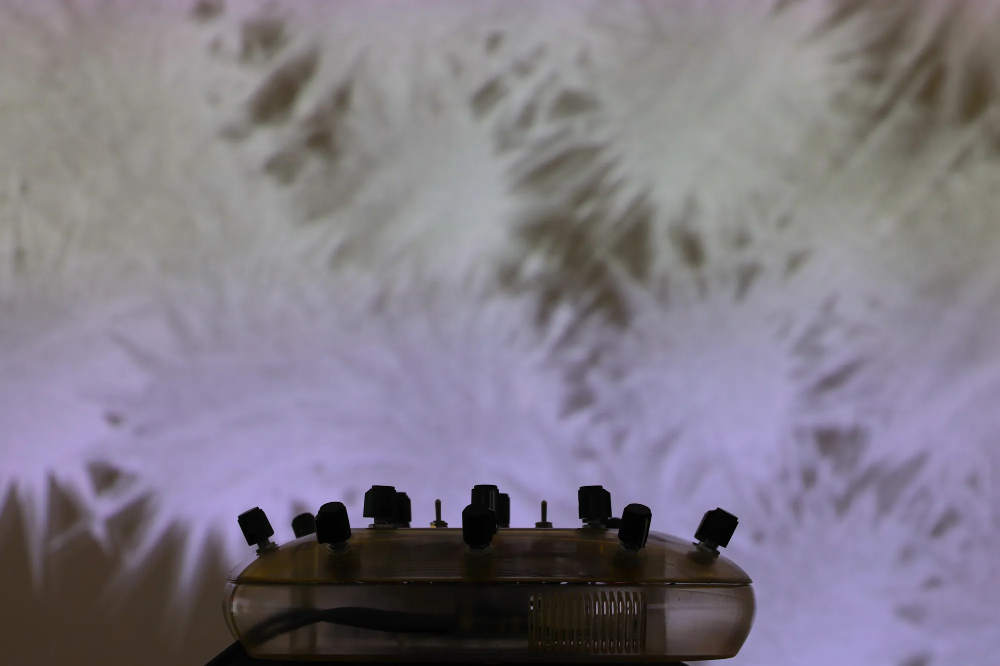
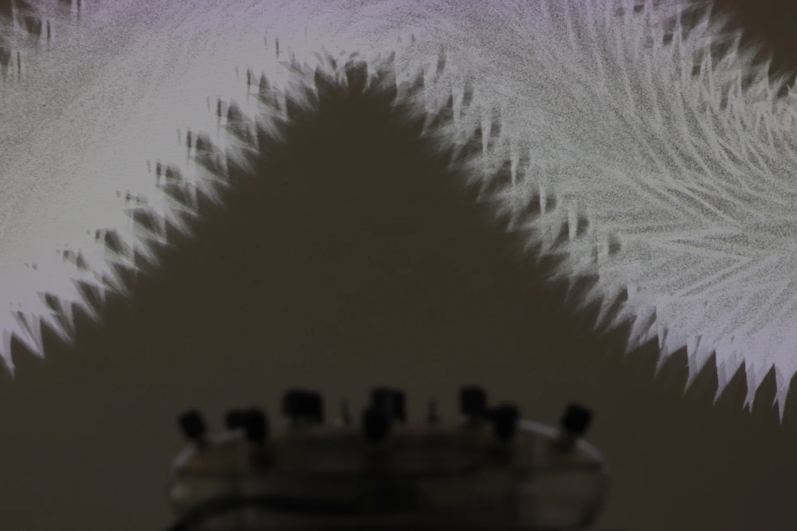

VJ Controller: MA Thesis
Two VJ controllers, one in the browser and one 3D-printed, that let people co-create real-time visuals.
Brief
My speculative MA thesis explored the distance between control inputs and creative output in analogue and digital mediums, focusing on chance methods. The brief I set: a web-based and a physical visual controller, using VJing as a framework for real-time interaction.
01Browser
The browser controller came first, and became the foundation for everything else.
I spent months iterating on blackboxvj.me, from mapping shapes via webcam to visuals that synced to the beat. I designed it and built the front end as far as my own skills took me, then used agentic workflows to bridge the rest. Blending features made for many happy little accidents. With so much customisation available, this controller was labelled.
02Wire
A Python script connected the switches and knobs to the browser, so the hardware drove the visuals live.
It was my first foray into electronics, so lots of re-soldering was needed. I mapped each switch and potentiometer through an analogue to digital converter to a test site reading values from 0.0 to 1.0, handy for checking I hadn't fried the circuitry. A makeshift labelled case let me reassign features easily.


03Fabricate
The enclosure is a 90s-inspired 'blobject', modelled in Fusion 360 around the single-board computer.
It had to be smooth, structurally stable and small enough for the available 3D printer. A UV chamber cured the resin, and clear spray gave it a glossy finish.

04Test
I left the physical controller unlabelled, so people would play instead of reading instructions.
Testing both controllers, most people locked in with the visual output, essentially "vibing" it out with the switches and knobs. The focus moved from understanding the system to experiencing it.
05Exhibit
Over 150 visitors co-created with the controller at the White Box during Oslo Art Weekend.
Hooked up to an eight-hour ambient playlist, it drew people in and kept them playing. As a side quest to close the analogue-digital loop, I printed screencaps of the visuals in silkscreen and digital knitting.



Results
Oslo Art Weekend
What I learned
Labels teach the system, but leaving them off invites people to play. Testing showed the second produced better work, even when people understood less of what was happening.